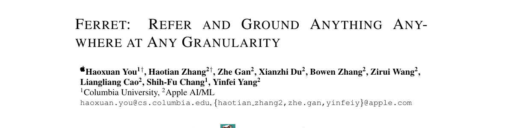
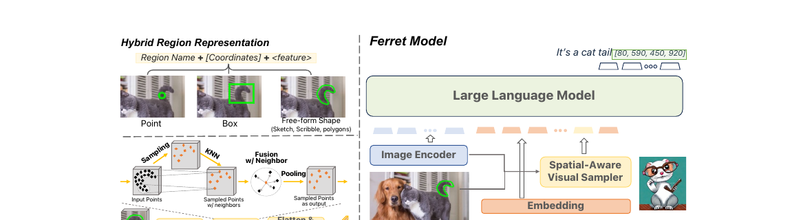
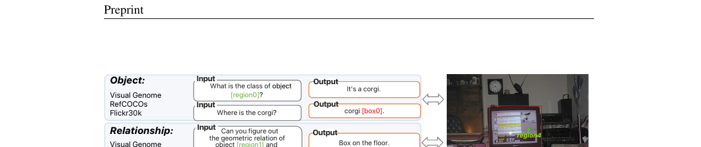

Ferret: Refer and Ground Anything Anywhere at Any Granularity

region0，问"这块区域里是什么动物"。右（输出定位 Grounding）：Ferret 回答时把每个可定位名词后面紧跟坐标框 [box0]。下例还能基于圈出的食物区域做带定位的多步推理（turkey/cheese/knife 各自标框）。（论文 Fig. 1）
上一篇 LISA 解决的是输出：文本 → 掩码（"想哪打哪"）。Ferret 解决的是对偶的输入：区域 → 语义（"圈哪问哪"）。你终于可以在图上画一笔，问"这玩意儿是什么、怎么用"。
1. 出发点 (Motivation)
空间理解有两个互为对偶的能力:
- Referring（指代）：给定一块区域,模型要读懂它的语义——"这块[region0]是什么"。
- Grounding（定位）：给定一句描述,模型要框出对应区域——"corgi 在哪" →
corgi [box0]。
论文的核心观察：这两件事需要的是同一种知识——空间与语义的对齐。可现有工作几乎都把它们分开学（指代分割一套、检测定位一套）。而人类能从一个任务学到的东西无缝迁移到另一个,还能把指代/定位自然糅进日常对话和推理里。
于是论文盯住三个问题:
- 能否在一个框架里统一指代和定位,且让两者互相增益?
- 怎么表示人类真正会用的"各种形状"的区域?——不只是点和框,还有涂鸦、划线、多边形、自由形状。
- 怎么让指代/定位是开放词表、可指令跟随、且鲁棒的?
痛点很具体:之前的 Kosmos-2、Shikra、GPT4RoI、PVIT 等只支持框(Shikra 多了点),都没法处理自由形状。而框有个根本缺陷——两个形状迥异的物体可能共享几乎相同的框:
论文 Fig. 2 的例子:一把手枪和一把刀叠放,二者的外接框几乎完全重合。只给框,模型根本分不清你指的是哪个。必须有一种能贴合任意形状的区域表示。
Ferret 就是冲着这三个问题来的,并且——按论文自己的说法——是第一个能处理自由形状区域输入的 MLLM。
2. 方法 (Method)

区域名 + [坐标] + <feature>,对点/框/自由形状统一适用;连续特征由空间感知视觉采样器产生(采样 → KNN 聚邻 → 融合 → 池化的点云式级联)。右：图像编码器 + 采样器 + LLM 联合建模图像、文本、区域三种信息;输出时在名词后直接生成坐标 [80, 590, 450, 920] 实现定位。除图像编码器冻结外,其余全部可训。（论文 Fig. 3）
2.1 直觉：坐标负责"在哪"，连续特征负责"长啥样"
只用坐标表示区域,就像用"经纬度"描述一个物体——能定位,但说不清形状(回到手枪/刀的例子)。只用连续特征(像 GPT4RoI 的 RoIAlign),又丢了精确的位置数值,且只能处理矩形框。
Ferret 的答案是两者都要——混合区域表示 (hybrid region representation):
—— 翻译：例如 "a cat [100, 50, 200, 300] <SPE>"。前面是区域名(不知道就写 "region"/"area"),中间是离散坐标(负责"在哪"),最后一个占位 token <SPE> 会被一段连续视觉特征替换(负责"长啥样")。这样区域就能像普通词一样混进句子里。
两个关键设计:
- 坐标当普通文本数字处理:每个坐标量化到 \(n_{bins}=1000\) 个离散桶里,但不引入任何新词表 token(区别于 Pix2Seq / Kosmos-2 那种专门的 location token)。量化是"输入无关"的——任意输入分辨率都映射到同一套坐标,所以对分辨率鲁棒。
- 占位 token 承载连续特征:
<SPE>这个位置的 embedding,会被空间感知视觉采样器抽出的区域特征替换。
2.2 空间感知视觉采样器：把"任意形状"当点云处理
怎么从一个任意形状的区域里抽特征?卷积、patch attention 这种网格化操作处理不了不规则形状。论文的灵感来自 3D 点云学习(PointNet++ / PointMLP)——点云本来就是不规则、稀疏度不均的。
给定图像特征图 \(Z \in \mathbb{R}^{H \times W \times C}\) 和区域二值掩码 \(M\),流程是:
- 在掩码 \(M\) 内随机采 \(N=512\) 个正点,每个点的特征用双线性插值得到;
- 级联两个 block,每个 block 三步——采样 → 聚集 → 池化:
- 采样:用最远点采样 (FPS) 选 \(N_r\) 个点,保证覆盖均匀;
- 聚集:对每个采样点 \(x_i\),找它的 \(k=24\) 个最近邻,按 PointMLP 方式融合邻居特征:
—— 翻译：对采样点 x_i 和它的某个邻居 x_ik,把"邻居相对它的特征差 Z(x_ik)−Z(x_i)"和"相对坐标差 C(x_ik)−C(x_i)"拼起来过一层 θ,再和中心点自身的特征 Z(x_i)、坐标 C(x_i) 拼起来过一层 σ。说白了:用"邻居相对中心的位置和特征差异"来刻画这块局部的几何。
- 池化:对 \(k\) 个邻居特征做池化,得到该采样点的最终特征:
—— 翻译：把一个采样点周围 k 个邻居的特征汇成一个(论文公式写的是 max 池化)。两个 block 跑完,512 个点压成 32 个点,每个点都吸收了局部邻域的几何信息。
- 最后把 32 个点的特征 flatten 成一个向量,投影到 LLM 的 embedding 维度,替换掉
<SPE>占位 token。
这套采样器的代码就是标准的点云级联——FPS + KNN + 融合 + 池化:
repo/ferret/model/ferret_arch.py:L276-L317 — 空间感知视觉采样器的两段级联(对应公式 1、2)
for stage_i in range(len(self.num_sub_point)):
cur_num_sub_point = self.num_sub_point[stage_i]
cur_num_neighbor = self.num_neighbor[stage_i]
fps_idx = farthest_point_sample(all_points, cur_num_sub_point).long() # 采样
new_points = index_points(all_points, fps_idx)
new_points_fea = index_points(all_points_fea, fps_idx)
idx = knn_point(cur_num_neighbor, all_points, new_points) # 聚集邻居
grouped_points = index_points(all_points, idx)
grouped_points_fea = index_points(all_points_fea, idx)
local_points_fea = torch.cat([grouped_points_fea, grouped_points], dim=-1)
anchor_points_fea = torch.cat([new_points_fea, new_points], dim=-1).unsqueeze(-2)
diff_points_fea = local_points_fea - anchor_points_fea # 相对差(公式1的核心)
diff_points_fea = self.diff_projector_list[stage_i](diff_points_fea)
gather_points_fea = torch.cat([diff_points_fea, anchor_points_fea.repeat(1,1,cur_num_neighbor,1)], dim=-1)
...
gather_points_fea = self.pooler_list[stage_i](gather_points_fea) # 池化(公式2)
all_points, all_points_fea = new_points, gather_points_fea
x = all_points_fea.flatten(1, -1)
all_region_fea = self.dim_projector(self.flatten_projector(x)) # → LLM embedding 维度
2.3 输出端：名词后直接吐坐标
输入侧解决了,输出侧的定位更简单:Ferret 在生成文本时,在每个可定位名词后面直接生成框坐标文本,比如 "There is a dog [100, 150, 300, 200] in the figure."。模型隐式地学会"什么是可定位的、它在哪"。注意这里 Ferret 输出的是框坐标,不是 LISA 那种像素掩码——这正是后续 GLaMM / Osprey 要补的"输出掩码"那一步。
2.4 GRIT 数据集与 Ferret-Bench

- GRIT(Ground-and-Refer Instruction-Tuning):110 万条多模态对话。三类来源——(i) 把现成视觉任务(检测、短语定位、Visual Genome)用模板转成指令格式;(ii) 用 ChatGPT/GPT-4 生成 34K 条带指代-定位的对话;(iii) 空间负样本挖掘 95K 条(问图里有没有某个其实不存在的物体),专治幻觉。还用 GLIPv2 把 LLaVA-158k 里的名词自动框出来,做成"伪定位"数据。
⚠️ 命名坑:Ferret 的 GRIT 是 Ground-and-Refer Instruction-Tuning(1.1M 指令);Kosmos-2 的 GRIT 是 GRounded Image-Text pairs(~91M 网络图文对)。同名不同物,引用时务必区分。
- Ferret-Bench:三个全新任务——指代描述 (Referring Description)、指代推理 (Referring Reasoning)、对话中定位 (Grounding in Conversation),用 GPT-4 当裁判。
3. 结论 (Key findings)
① 在"需要指代+推理"的对话任务上大幅领先。 Ferret-Bench(GPT-4 评判,越高越好):
| 模型 | 指代描述 | 指代推理 | 对话中定位 | 平均 |
|---|---|---|---|---|
| LLaVA | 41.4 | 31.7 | 28.8 | 34.0 |
| Kosmos-2 | 51.8 | 33.7 | 48.4 | 44.6 |
| Shikra-7B | 46.0 | 41.6 | 50.1 | 45.9 |
| Ferret-7B | 68.7 | 67.3 | 57.5 | 64.5 |
| Ferret-13B | 70.6 | 68.7 | 59.7 | 66.3 |
比最强基线 Shikra 平均高 +20.4%(64.5 vs 45.9),指代推理一项几乎翻倍。
② 指代和定位真的互相增益(验证 Q1)。 消融(Table 8):去掉定位数据,指代精度从 Point 67.9→65.4、Box 79.4→75.6;去掉指代数据,定位 Flickr30k 80.4→79.8。两半合起来训,两边都更好——这是论文最重要的立论。
③ 采样器比 SEEM 的更适合自由形状(验证 Q2)。 Table 9:Ferret 的空间感知采样器在自由形状指代上 69.8,优于 SEEM 的采样器 68.9;点、框上也更好。
④ 显著缓解物体幻觉。 POPE 幻觉基准 accuracy:Ferret 90.24 vs Shikra 86.90 vs LLaVA 50.37。空间负样本挖掘起了作用——模型更敢说"图里没有"。
4. 实现细节 (Implementation notes)
把论文落到 apple/ml-ferret 代码,有几处只读论文看不到:
① 占位 token 论文叫 <SPE>,代码叫 <region_fea>。 和 LISA 的 <SEG>/[SEG] 一模一样的对不上:
repo/ferret/model/ferret_arch.py:L24, L632-L633 — 占位 token 的真名与注册
DEFAULT_REGION_FEA_TOKEN = "<region_fea>"
...
num_region_fea_tokens = tokenizer.add_tokens([DEFAULT_REGION_FEA_TOKEN], special_tokens=True)
self.config.im_region_fea_token = tokenizer.convert_tokens_to_ids([DEFAULT_REGION_FEA_TOKEN])[0]
② "不引入新词表"这句话只对坐标成立,对连续特征不成立。 论文第 1 节脚注说 "no additional vocabulary or position encoders introduced"。严格讲这只对坐标为真(坐标是纯数字文本 token);上面 L632 明明给词表加了一个 <region_fea> 特殊 token。准确的说法是:坐标零新词表,但连续特征路径加了一个占位 token。
③ 区域特征注入 = 输入侧的 <SEG> 镜像。 这是和 LISA 最值得对照的一行。LISA 在输出时取 <SEG> 的隐藏向量喂给 SAM;Ferret 在输入时,把采样器算出的区域特征写回 <region_fea> 占位 token 的 embedding:
repo/ferret/model/ferret_arch.py:L567-L572 — 用区域特征替换 <region_fea> 占位 token 的 embedding
if region_flag and region_features[batch_idx] is not None:
region_embs = torch.zeros_like(text_input_embeds)
region_replace_mask = (cur_input_ids == self.config.im_region_fea_token)
region_embs[region_replace_mask] = region_features[batch_idx].to(text_input_embeds.dtype)
text_input_embeds = text_input_embeds * (~region_replace_mask).to(text_input_embeds.dtype)[:, None] + region_embs
一句话对照:LISA 是"LLM 吐一个 token,解码成掩码";Ferret 是"把区域编码成一个 token,塞进 LLM"。 同一个"token 当桥"的思想,方向相反。
④ 论文公式 2 写 max 池化,代码默认却是 mean 池化。 GeoRegionSampler 的 pooler_mode 默认 'mean'(用 AvgPool1d),而论文公式 (2) 写的是 \(\max\)。这是一处 paper-vs-code 不一致——实际训练用的配置可能覆盖成别的,但默认实现与公式不符,复现时要留意:
repo/ferret/model/ferret_arch.py:L185, L202-L205 — 池化模式默认 mean,与论文公式 2 的 max 不符
def __init__(self, ..., pooler_mode='mean'): # 默认 mean,非论文的 max
...
if pooler_mode == 'mean':
self.pooler_list.append(nn.AvgPool1d(kernel_size=num_neighbor[ii]))
elif pooler_mode == 'max':
self.pooler_list.append(nn.AdaptiveMaxPool1d(output_size=1))
⑤ 最远点采样 (FPS) 是纯 PyTorch 串行实现。 没有用 CUDA kernel,就是一个 for 循环逐点迭代选最远点——区域多、点多时会偏慢:
repo/ferret/model/ferret_arch.py:L73-L92 — FPS 的串行实现
def farthest_point_sample(xyz, npoint):
B, N, C = xyz.shape
centroids = torch.zeros(B, npoint, dtype=torch.long).to(device)
distance = torch.ones(B, N).to(device) * 1e10
farthest = torch.randint(0, N, (B,), dtype=torch.long).to(device)
for i in range(npoint):
centroids[:, i] = farthest
centroid = xyz[batch_indices, farthest, :].view(B, 1, 2)
dist = torch.sum((xyz - centroid) ** 2, -1)
distance = torch.min(distance, dist)
farthest = torch.max(distance, -1)[1]
return centroids
⑥ 除图像编码器外全部可训。 CLIP-ViT-L/14 冻结,采样器、投影层、LLM(Vicuna)全量微调——注意这里不是 LISA 那种 LoRA,Ferret 是全量微调 LLM。
5. 批判性总结 (Critical assessment)
Strengths
- 把"区域表示"这件事想透了:hybrid = 离散坐标(精确位置) + 连续特征(任意形状),同时占住"坐标即文本"(无新词表)和"区域即特征"(贴合形状)两个阵营的优点。这是 Ferret 最持久的贡献。
- 指代+定位互益的实证:不是口号,有 Table 8 的消融撑着——统一训练确实双赢。
- 第一个吃自由形状输入的 MLLM:点/框/涂鸦/多边形/掩码通吃,把人机交互的输入面打开了。
- 数据与评测的完整性:GRIT(含 95K 负样本)+ Ferret-Bench,后来被一票区域 MLLM 当 baseline。
Limitations / open questions
- 输出只到框,不到像素:Ferret 定位输出的是 bounding box 坐标,不是掩码。要像素级精度得靠 LISA 那条线(
<SEG>→SAM)。GLaMM/AnyRef/Sa2VA 把"输入区域 + 输出掩码"两头都补上了。 - 采样器偏重、FPS 串行:点云式采样 + 纯 PyTorch FPS,区域一多就慢;且采样器引入了不少超参(N=512、k=24、2 block)。
- 固定低分辨率 (336px):CLIP-ViT-L/14 的输入分辨率,对小物体/密集场景不友好——这正是 Ferret-v2 要解决的(any-resolution)。
- 坐标回归的精度天花板:把框写成文本数字,精度受限于 token 化与量化桶;后来 Groma/ChatRex 干脆把定位"外包"给区域提议器,避开坐标回归。
- paper-vs-code 小坑:
<SPE>/<region_fea>命名不一致、池化默认 mean 与公式 max 不符——复现要小心。
When to use / not use
- 适合:需要"用户圈一块区域 → 模型理解/对话"的交互(标注辅助、视觉问答、UI/截图理解);需要带定位的多模态对话;在意物体幻觉的场景。
- 不适合:要像素级掩码输出(用 LISA 线);对延迟极敏感(采样器+全量 LLM 重);只需纯框检测(专用检测器更省)。
后续工作谱系（输入侧 region grounding 的对偶线）
这是本文重点。把区域"喂进" MLLM,历史上有两条机制,Ferret 是它们的合流点;之后又长出 Apple 自己的高分辨率/UI 分支,以及"输入区域+输出掩码"的双向线。下表 arxiv id 均逐条核验。
两种区域表示机制,以及 Ferret 的位置
| 机制 | 区域 = 什么 | 代表 |
|---|---|---|
| (a) 坐标即文本/token | 一串数字写进文本流 | Shikra(2306.15195,纯十进制文本)、Kosmos-2(2306.14824,离散 location token) |
| (b) 连续区域特征 | 一个池化/采样出的特征向量 | GPT4RoI(2307.03601,RoIAlign)、PVIT(2308.13437,区域编码器)、RegionGPT(2403.02330,掩码池化) |
| (a)+(b) 混合 | 坐标 ∥ 连续特征,同一个区域 token 两者都给 | Ferret——且唯一支持自由形状输入 |
| (c) 视觉提示叠加 | 直接在像素上画框/箭头/涂鸦 | ViP-LLaVA(2312.00784) |
| (d) 提议+索引 | 区域提议器出框,LLM 选 index | Groma(2404.13013)、ChatRex(2411.18363) |
A. Apple 直系
- Ferret-v2(
2404.07973,COLM24):三个升级——any-resolution(保宽高比切片,替掉固定 336px)、多粒度视觉编码(CLIP 之外加 DINOv2 抓细粒度)、三阶段训练。把 Ferret 推到高分辨率密集感知。 - Ferret-UI(
2404.05719,ECCV24):把 Ferret 搬到手机 UI 屏幕,加 "any resolution" 子图切分放大小图标/文字,配 UI 任务指令集(控件分类、图标识别、OCR、找控件、点击目标定位),报告超过 GPT-4V 的 UI 能力。这条线后来喂养了整个 GUI agent grounding 方向(SeeClick、ScreenSpot、UI-TARS,见 vlm-grounding-2025)。 - Ferret-UI 2(
2410.18967):从手机推广到 iPhone/Android/iPad/Web/AppleTV 五平台,自适应高分辨率 + GPT-4o set-of-mark 数据生成,跨平台迁移。
B. 输入区域 + 输出掩码(双向 grounding)——补 Ferret"只输出框"的短板
- GLaMM(
2311.03356,CVPR24):接受文本和可选视觉提示输入,输出交错的文本 + 分割掩码(Grounded Conversation Generation),配超大 GranD 数据。最被引的双向工作。 - Osprey(
2312.10032,CVPR24):掩码作为输入(mask-pooling 区域特征)做像素级理解——最贴近"mask 输入"的对偶。 - AnyRef(
2403.02969,CVPR24):输入扩到文本/框/图像/音频四模态,输出掩码 + 区域表达。 - OMG-LLaVA(
2406.19389,NeurIPS24):用通用分割模型 OMG-Seg 当视觉前端,一套模型贯通 image/object/pixel,接受视觉提示、输出掩码。 - Sa2VA(
2501.04001,2025):LLaVA + SAM-2,把双向 grounding 推到视频(referring VOS),配 Ref-SAV 数据。
C. 同期输入侧家族(都只支持框/点,Ferret 用自由形状区分自己):GPT4RoI(RoIAlign 框)、Shikra(坐标文本,点+框)、Kosmos-2(location token,框)、PVIT(区域编码器,框)、ChatSpot(2307.09474,点/框提示)、Groma(提议+region token)、SPHINX(2311.07575,多任务混合)。
一句话趋势(2023→2026):区域表示从"坐标即文本"(Shikra/Kosmos-2,精度有天花板)→"连续区域特征"(GPT4RoI/PVIT,只到框)→ Ferret 的混合 + 自由形状(两条线合流)→ 输出端从框升级到掩码(Osprey/GLaMM/Sa2VA)、输入端升级到高分辨率与 UI(Ferret-v2/Ferret-UI)。到 2025,定位机制基本收敛到两个赢家:掩码 token + 基座分割器(LISA→GLaMM→Sa2VA)和提议+索引(Groma/ChatRex);而 Ferret 的"混合区域 token"则被直接继承进任意分辨率密集感知与任意形状输入。
Further reading
- 输出侧对偶:lisa-2023(文本→掩码,
<SEG>embedding-as-mask)。 - 本站相关:vlm-grounding-2025(视觉-语言 grounding 教程,含 Shikra/Kosmos-2/GUI 线)、q-ground-2024。
- 综述与清单:
github.com/mc-lan/Awesome-MLLM-Segmentation。
讨论 / Comments
评论托管在本仓库的 GitHub Discussions, 需 GitHub 账号。